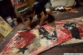
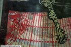
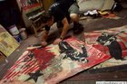
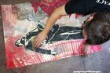
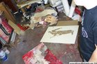
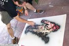
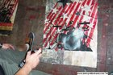
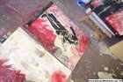

Interpol
From The Giant: The Definitive Obey Giant Site
{kind=link}
An indie rock band from New York City, whose members are Paul Banks, Carlos Dengler, Sam Fogarino, and Daniel Kessler. In 2004, Shepard worked with the band to create a set of prints for their then-upcoming album, Antics. The four prints, one of each band member, were sold at "Interpol Space" (see below) for $30 each or $100 for the set, and were limited to 500 of each. All prints were signed and numbered.
It has been noted that Shepard is a very big fan of Interpol. (Site Administrator notes: Check out the band, especially their first album, Turn on the Bright Lights.)
From Supply and Demand, pg. 300:
Interpol is one of my favorite bands to come out in the last few years, and I approached Paul Banks, the singer, after a show a few years ago and told him I was a big fan and offered to do some artwork for them. We became friends, and eventually he called me and said that Interpol was releasing a new record, and to promote the release they didn’t just want to throw a party, they wanted to have art spaces, and they wanted me to create artwork and curate the spaces. I shot some photos of the band and borrowed some photos from them, then re-illustrated all of it and made mixed-media pieces that combined my drawings with the original photos, and finally deconstructed everything by showing the photos and the process along with the new pieces.
[edit] About Interpol Space
Taken from PlayBackSTL:
In the fall of 2004, Interpol took part in a project called Interpol Space. Space was a short-term project in a half-dozen major cities that featured Interpol-related items. “It was kind of a way to promote the record, yet not something that just screams out ‘mass marketing,’” said Fogarino. “It is work we did with Shepherd Fairey, the guy behind Obey Giant. He took some preexisting photographs to create these limited edition posters.” Fogarino admitted that he hadn’t been to the New York City shop. “I did look into the window,” he said with a laugh, and admitted he had visited Fairey’s L.A. Space. “Shepherd and his wife have curated the whole thing—kind of Interpol’s aesthetic interpreted by another artist. It is the first time that we weren’t totally involved in the process.”
[edit] Interpol Fine Art Collages
A fascinating series of photographs were released on an Interpol fan site showing Shepard working on fine art collages.
|  |  |  |  |  |
|  |  |  |
 |
{kind=link}
{kind=link}
{kind=link}
{kind=link}
{kind=link}
{kind=link}
{kind=link}
{kind=link}
{kind=link}
Additional image: media:interpolcollage8.jpg
{kind=link}